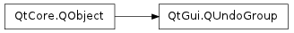

QUndoGroup ¶

Synopsis ¶
Functions ¶
- def activeStack ()
- def addStack (stack)
- def canRedo ()
- def canUndo ()
- def createRedoAction (parent[, prefix=”“])
- def createUndoAction (parent[, prefix=”“])
- def isClean ()
- def redoText ()
- def removeStack (stack)
- def stacks ()
- def undoText ()
Slots ¶
- def redo ()
- def setActiveStack (stack)
- def undo ()
Signals ¶
- def activeStackChanged (stack)
- def canRedoChanged (canRedo)
- def canUndoChanged (canUndo)
- def cleanChanged (clean)
- def indexChanged (idx)
- def redoTextChanged (redoText)
- def undoTextChanged (undoText)
Detailed Description ¶
The PySide.QtGui.QUndoGroup class is a group of PySide.QtGui.QUndoStack objects.
For an overview of the Qt’s undo framework, see the overview .
An application often has multiple undo stacks, one for each opened document. At the same time, an application usually has one undo action and one redo action, which triggers undo or redo in the active document.
PySide.QtGui.QUndoGroup is a group of PySide.QtGui.QUndoStack objects, one of which may be active. It has an PySide.QtGui.QUndoGroup.undo() and PySide.QtGui.QUndoGroup.redo() slot, which calls QUndoStack.undo() and QUndoStack.redo() for the active stack. It also has the functions PySide.QtGui.QUndoGroup.createUndoAction() and PySide.QtGui.QUndoGroup.createRedoAction() . The actions returned by these functions behave in the same way as those returned by QUndoStack.createUndoAction() and QUndoStack.createRedoAction() of the active stack.
Stacks are added to a group with PySide.QtGui.QUndoGroup.addStack() and removed with PySide.QtGui.QUndoGroup.removeStack() . A stack is implicitly added to a group when it is created with the group as its parent PySide.QtCore.QObject .
It is the programmer’s responsibility to specify which stack is active by calling QUndoStack.setActive() , usually when the associated document window receives focus. The active stack may also be set with PySide.QtGui.QUndoGroup.setActiveStack() , and is returned by PySide.QtGui.QUndoGroup.activeStack() .
When a stack is added to a group using PySide.QtGui.QUndoGroup.addStack() , the group does not take ownership of the stack. This means the stack has to be deleted separately from the group. When a stack is deleted, it is automatically removed from a group. A stack may belong to only one group. Adding it to another group will cause it to be removed from the previous group.
A PySide.QtGui.QUndoGroup is also useful in conjunction with PySide.QtGui.QUndoView . If a PySide.QtGui.QUndoView is set to watch a group using QUndoView.setGroup() , it will update itself to display the active stack.
- class PySide.QtGui. QUndoGroup ( [ parent=None ] ) ¶
-
Parameters: parent – PySide.QtCore.QObject Creates an empty PySide.QtGui.QUndoGroup object with parent parent .
See also
- PySide.QtGui.QUndoGroup. activeStack ( ) ¶
-
Return type: PySide.QtGui.QUndoStack Returns the active stack of this group.
If none of the stacks are active, or if the group is empty, this function returns 0.
- PySide.QtGui.QUndoGroup. activeStackChanged ( stack ) ¶
-
Parameters: stack – PySide.QtGui.QUndoStack
- PySide.QtGui.QUndoGroup. addStack ( stack ) ¶
-
Parameters: stack – PySide.QtGui.QUndoStack Adds stack to this group. The group does not take ownership of the stack. Another way of adding a stack to a group is by specifying the group as the stack’s parent PySide.QtCore.QObject in QUndoStack.QUndoStack() . In this case, the stack is deleted when the group is deleted, in the usual manner of QObjects .
See also
PySide.QtGui.QUndoGroup.removeStack() PySide.QtGui.QUndoGroup.stacks() QUndoStack.QUndoStack()
- PySide.QtGui.QUndoGroup. canRedo ( ) ¶
-
Return type: PySide.QtCore.bool Returns the value of the active stack’s QUndoStack.canRedo() .
If none of the stacks are active, or if the group is empty, this function returns false.
- PySide.QtGui.QUndoGroup. canRedoChanged ( canRedo ) ¶
-
Parameters: canRedo – PySide.QtCore.bool
- PySide.QtGui.QUndoGroup. canUndo ( ) ¶
-
Return type: PySide.QtCore.bool Returns the value of the active stack’s QUndoStack.canUndo() .
If none of the stacks are active, or if the group is empty, this function returns false.
- PySide.QtGui.QUndoGroup. canUndoChanged ( canUndo ) ¶
-
Parameters: canUndo – PySide.QtCore.bool
- PySide.QtGui.QUndoGroup. cleanChanged ( clean ) ¶
-
Parameters: clean – PySide.QtCore.bool
- PySide.QtGui.QUndoGroup. createRedoAction ( parent [ , prefix="" ] ) ¶
-
Parameters: - parent – PySide.QtCore.QObject
- prefix – unicode
Return type: Creates an redo PySide.QtGui.QAction object with parent parent .
Triggering this action will cause a call to QUndoStack.redo() on the active stack. The text of this action will always be the text of the command which will be redone in the next call to PySide.QtGui.QUndoGroup.redo() , prefixed by prefix . If there is no command available for redo, if the group is empty or if none of the stacks are active, this action will be disabled.
If prefix is empty, the default prefix “Undo” is used.
- PySide.QtGui.QUndoGroup. createUndoAction ( parent [ , prefix="" ] ) ¶
-
Parameters: - parent – PySide.QtCore.QObject
- prefix – unicode
Return type: Creates an undo PySide.QtGui.QAction object with parent parent .
Triggering this action will cause a call to QUndoStack.undo() on the active stack. The text of this action will always be the text of the command which will be undone in the next call to PySide.QtGui.QUndoGroup.undo() , prefixed by prefix . If there is no command available for undo, if the group is empty or if none of the stacks are active, this action will be disabled.
If prefix is empty, the default prefix “Undo” is used.
- PySide.QtGui.QUndoGroup. indexChanged ( idx ) ¶
-
Parameters: idx – PySide.QtCore.int
- PySide.QtGui.QUndoGroup. isClean ( ) ¶
-
Return type: PySide.QtCore.bool Returns the value of the active stack’s QUndoStack.isClean() .
If none of the stacks are active, or if the group is empty, this function returns true.
- PySide.QtGui.QUndoGroup. redo ( ) ¶
-
Calls QUndoStack.redo() on the active stack.
If none of the stacks are active, or if the group is empty, this function does nothing.
- PySide.QtGui.QUndoGroup. redoText ( ) ¶
-
Return type: unicode Returns the value of the active stack’s QUndoStack.redoText() .
If none of the stacks are active, or if the group is empty, this function returns an empty string.
- PySide.QtGui.QUndoGroup. redoTextChanged ( redoText ) ¶
-
Parameters: redoText – unicode
- PySide.QtGui.QUndoGroup. removeStack ( stack ) ¶
-
Parameters: stack – PySide.QtGui.QUndoStack Removes stack from this group. If the stack was the active stack in the group, the active stack becomes 0.
See also
PySide.QtGui.QUndoGroup.addStack() PySide.QtGui.QUndoGroup.stacks() QUndoStack.~QUndoStack()
- PySide.QtGui.QUndoGroup. setActiveStack ( stack ) ¶
-
Parameters: stack – PySide.QtGui.QUndoStack Sets the active stack of this group to stack .
If the stack is not a member of this group, this function does nothing.
Synonymous with calling QUndoStack.setActive() on stack .
The actions returned by PySide.QtGui.QUndoGroup.createUndoAction() and PySide.QtGui.QUndoGroup.createRedoAction() will now behave in the same way as those returned by stack ‘s QUndoStack.createUndoAction() and QUndoStack.createRedoAction() .
- PySide.QtGui.QUndoGroup. stacks ( ) ¶
-
Return type: Returns a list of stacks in this group.
- PySide.QtGui.QUndoGroup. undo ( ) ¶
-
Calls QUndoStack.undo() on the active stack.
If none of the stacks are active, or if the group is empty, this function does nothing.
- PySide.QtGui.QUndoGroup. undoText ( ) ¶
-
Return type: unicode Returns the value of the active stack’s QUndoStack.undoText() .
If none of the stacks are active, or if the group is empty, this function returns an empty string.
- PySide.QtGui.QUndoGroup. undoTextChanged ( undoText ) ¶
-
Parameters: undoText – unicode